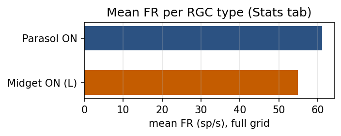
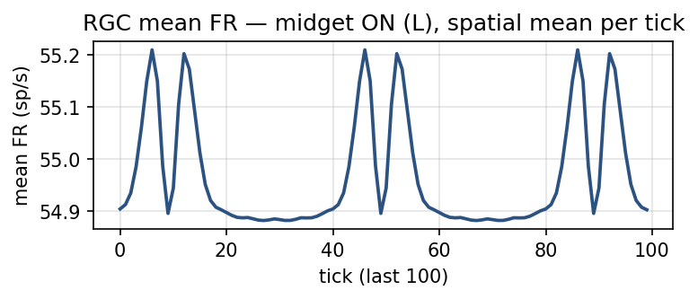
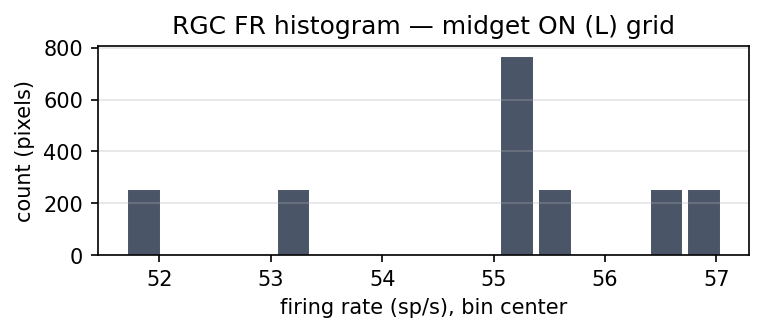
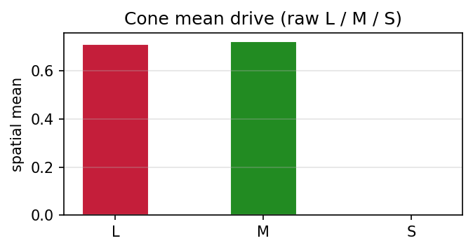
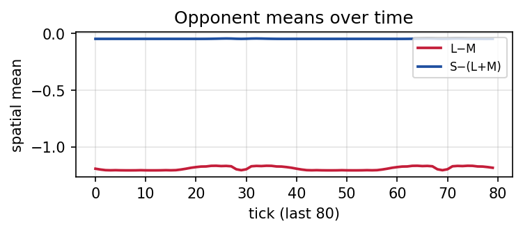

User interface
This page describes the graphical interface: panels, views, and how they connect to the model. For math and biology, use the concepts pages (linked below).
Theory cross-references
Topic |
Where to read more |
|---|---|
Signal flow (stimulus → RGC) |
|
Cell types, center–surround, convergence |
|
Equations, symbols, parameter list |
Layout
The window has three main areas:
Left panel — View mode, 2D layer selector (when applicable), stimulus controls, and when 3D Stack is selected: 3D camera, connectivity toggles, Inspection layer (coarse pick for viewport clicks), then Circuit tuning (synaptic weights and cell parameters) in the same scroll area.
Center — The main viewport: 2D heatmap, 2D all-layers mosaic, or the 3D Signal Flow Column (Vispy).
Right panel (tabs) — Stats, Plots, Export (below), and Inspector (only when 3D Stack is active; connectivity for the picked cell).
View mode
Use View → Mode (left panel, Mode combo) to switch:
Mode |
Purpose |
|---|---|
2D Heatmap |
Single layer, full viewport; use Layer to choose which array is shown (Conceptual overview, layers list). |
2D All Layers |
Tiled overview of major stages; good for comparing cone vs bipolar vs RGC at a glance. |
3D Stack |
Signal-flow column, connectivity lines, per-slab traces; Inspector tab becomes available; pick layer applies to viewport clicks. |
Stats, Plots, and Export refer to the running simulation state (same pipeline as in Model equations), regardless of view mode.
Image stimuli use the rgbtolms RGB→spectrum mapping in the pipeline (no separate UI toggle).
2D Heatmap mode
Layer combo selects which layer to display (Stimulus, Cones L/M/S, Horizontal, Bipolar ON, Amacrine, RGC Firing (L), etc.).
Heatmap colormap selects how scalar grids are painted: Firing, Biphasic, Spectral, Diverging. These are the same modes as
grid_to_rgbainsrc/rendering/heatmap.py(see figure below).Stimulus uses a spectral-derived RGB from the current stimulus spectrum; other layers use the scalar colormaps as chosen.

One synthetic 2D grid shown with the four colormap modes (scripts/generate_doc_example_plots.py calls grid_to_rgba like the viewer).
Image stimuli
Selecting Stimulus type = image enables Load image stimulus….
The image is resized to the retinal grid and converted to a per-pixel spectrum before cone integration—see Pixel-image stimuli in Model equations.
Intensity scales the spectrum globally (brighter image → stronger cone drive).
3D Stack (Signal Flow Column) mode
Show signal flow — Toggles connection lines (cone to horizontal, cone to bipolar, bipolar to amacrine, bipolar to RGC). Matches pathway descriptions in Conceptual overview.
Slice position — Moves the slice used for per-layer oscilloscope traces beside each slab.
Camera — Azimuth, elevation, distance; drag to orbit, scroll to zoom. View menu: Top / Front / Isometric.
Layer visibility — Per-slab on/off and opacity (Stimulus through RGC).
Per-layer trace strips — Space–time heatmap and line trace for each slab.
Inspector tab (right) appears only in this mode: click the viewport to pick a cell; details depend on Inspection layer (coarse layer) on the left. Connectivity math follows the same weights as Circuit tuning and Parameters (reference).
Circuit tuning (left panel, bottom)
Synaptic weights
Editable weights: Cone to Horizontal, Cone to Bipolar, Horizontal to Cone, Bipolar to Amacrine, Amacrine to Bipolar, Bipolar to RGC (range 0.0–3.0). They scale terms in the pipeline (see weight symbols in Model equations, sections 2–7).
Reset weights to 1.0 — Restores defaults.
Randomize weights — Uniform random in [0.5, 2.0] for exploration.
Cell parameters
Tree nodes group pathway and pool knobs (narrow vs wide RGC fields, bipolar pooling, horizontal feedback, narrow vs wide lateral inhibition), not fixed histological names. They map to \(\sigma\) scales, LN parameters (\(r_{\max}\), slope, half-point), and \(\tau\) values in Model equations (section 7 and the LN figure there).
Stats tab
The Stats tab reads the same arrays the pipeline writes each frame (see _update_stats in src/gui/app.py).
Mean FR per RGC type — Spatial mean of the midget ON (L) and parasol ON firing-rate grids (
fr_midget_on_L,fr_parasol_on).L−M and S−(L+M) — One summary line each: spatial mean of
lm_opponentandby_opponent(same definitions as Model equations, color-opponent section).Per-layer — For Stimulus, Cones L/M/S, Horizontal, Bipolar, Amacrine, and RGC: mean, standard deviation, min, and max over the grid. Stimulus uses the spectrally summed mask (sum over wavelength); RGC here is the midget ON (L) firing grid.
RGC dynamics → RGC mean FR (last 100 ticks) — A line trace of the spatial mean of
fr_midget_on_Leach tick; the window keeps the last 100 samples so you can see drift or oscillation as the stimulus or state changes.RGC FR histogram — Distribution of pixel values in the current
fr_midget_on_Lgrid (default 16 bins over the data range; the UI updates this plot on a throttled cadence). Figures below use example data from a headlesspipeline.tickrun (same stimulus and logic as the app).
{kind=link}

Example: mean firing rate across the grid for each type (same quantities as the two lines at the top of the Stats tab).
{kind=link}

Example: last 100 ticks of spatial mean midget ON (L) firing rate.
{kind=link}

Example: histogram of midget ON (L) firing rates over space at one time (same layer as the 2D heatmap when that layer is selected).
Plots tab
Cone mean drive (L / M / S) — Three bars: spatial mean of
cone_L,cone_M, andcone_S(raw cone outputs after the spectral inner product, before the horizontal surround step).Opponent means over time (last 80 ticks) — Two traces: spatial mean of
lm_opponentandby_opponenteach tick, keeping the last 80 samples. L−M is built from midget ON L and M firing grids; S−(L+M) from effective cone outputs (see Model equations).
{kind=link}

Example: cone mean drive bars (same three means as the Plots tab).
{kind=link}

Example: opponent means over the last 80 recorded ticks.
Export tab
Control |
Output |
|---|---|
Save screenshot (PNG) |
Captures the current viewport RGBA buffer (what you see in the center panel) as a PNG via |
Save layer stats (CSV) |
One CSV row per named layer: mean, min, max, std over the grid. Layers: |
Save layer grids (.npy) |
Writes one |
Arrays written by Save layer grids (when present on SimState):
File |
Role |
|---|---|
|
Spectral radiance cube \((H, W, L_\lambda)\). |
|
Raw cone responses. |
|
Cone outputs after horizontal feedback. |
|
Horizontal cell pool. |
|
Bipolar and amacrine layers (ON/OFF and pathways as named in code). |
|
RGC firing rates (midget / parasol, ON / OFF). |
|
Opponent maps (same as in Model equations). |
Figures on this page are generated by scripts/generate_doc_example_plots.py (plot_gui_panels_from_pipeline uses pipeline.tick with a drifting full-field grating so the time traces are non-trivial).
For GitHub Pages deployment of this documentation, see Documentation site.